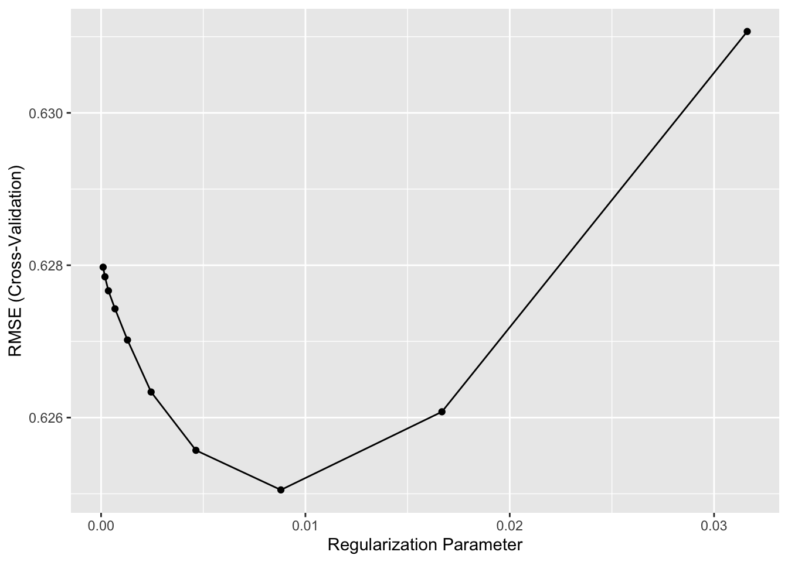

install.packages("remotes")
remotes::install_github("kjhealy/gssr")Workflow
Setup
This page rebuilds the data from scratch, so there is no file to download. You only need these packages.
library(gssr) # downloading the GSS data
library(dplyr) # data manipulation and the pipe
library(tidymodels) # bundles rsample for splitting and recipes for preprocessing
library(caret) # train() for fitting and cross validation
library(glmnet) # the lasso model we fit at the endThis page puts the whole unit together. Everything we have covered separately, missing data, filtering, numeric transformations, and categorical encoding, now happens in one pipeline on real data, starting from scratch.
The shape will look familiar from A Complete Pipeline. It is the same six steps, with a different dataset and a recipe that does considerably more work:
- Build the data
- Split
- Write a preprocessing recipe
- Choose a resampling scheme
- Fit and tune
- Evaluate on the test set, exactly once
Step 1: Build the Data
The steps below re-download our data, select the variables we want to keep, clean up the missing value codes, and do some basic relabeling.
Downloading and Selecting the Variables
# Downloads the full 2024 GSS. This is a big file, so it takes a moment.
gss24 <- gss_get_yr(2024)
# The variable we want to predict
target <- "happy"
features <- c(
"age", # age of participant
"sex", # sex of participant
"race", # race of participant
"educ", # highest education completed by participant
"income", # income of participant
"childs", # number of children participant has
"wrkstat", # work force status
"marital", # marital status
"born", # whether or not participant was born in USA
"partyid", # political party of participant
"adults", # num of fam members 18 or older
"earnrs" # number of earners in family
)
# Square brackets subset as [rows, columns]. The empty rows slot keeps every
# row, and the columns slot keeps only our target and features.
data <- gss24[, c(target, features)]
dim(data)[1] 3986 13Cleaning It Up
# define which varibles are categorical and continuous
cat_vars <- c("sex","race", "educ", "wrkstat", "marital", "born", "partyid")
con_vars <- c("age","income","childs","adults","earnrs","happy")
# Tidies up label text, turning "NEVER MARRIED" into "Never Married"
capwords <- function(x, strict = FALSE) {
cap <- function(x) paste(toupper(substring(x, 1, 1)),
{x <- substring(x, 2); if(strict) tolower(x) else x},
sep = "", collapse = " " )
sapply(strsplit(x, split = " "), cap, USE.NAMES = !is.null(names(x)))
}
# mutate() applies each step below to the columns named in it, and across()
# is what lets a single line act on a whole group of columns at once.
data <- data |>
mutate(
# The GSS fills unanswered questions with special codes rather than
# leaving them blank. zap_missing turns all of those into a plain NA.
# This has to run first, or the codes survive as if they were answers.
across(everything(), haven::zap_missing),
# Categorical columns become factors, using the labels the GSS ships
across(all_of(cat_vars), forcats::as_factor),
# Continuous columns become plain numbers we can do arithmetic on
across(all_of(con_vars), as.numeric),
# Tidy the label text, turning "NEVER MARRIED" into "Never Married".
# The \(x) is shorthand for function(x), needed only so we can pass
# capwords its strict = TRUE argument.
across(all_of(cat_vars), \(x) forcats::fct_relabel(x, capwords, strict = TRUE))
)
# Drop rows with no outcome. is.na() flags the missing ones and the ! negates
# it, so this keeps every row where happy was actually answered. There is
# nothing to learn from a case whose answer we do not know.
data <- data[!is.na(data$happy), ]
dim(data)[1] 3954 13Notice what we did not do here. We did not impute anything, drop low variance features, or standardize. Those are all modelling decisions, and they belong inside the recipe in step 3 so they can be learned from the training data alone.
Step 2: Split
We can now separate our data into a training and test set.
# The split is random, so fix the random number generator to make it
# reproducible. Any number works as long as you reuse the same one.
set.seed(123)
# initial_split() records which rows go where. It does not return data.
# prop = 0.7 70 percent of rows go to training
# strata = "happy" split within levels of happy, so both halves end up
# with a similar mix of happiness responses
split <- initial_split(data, prop = 0.7, strata = "happy")
# These two are what actually hand you the data frames
data_train <- training(split)
data_test <- testing(split)
# From here until step 6, data_test is never touched
c(train = nrow(data_train), test = nrow(data_test))train test
2766 1188 Step 3: A Preprocessing Recipe
What a Recipe Is
The recipes package is part of the tidymodels framework and is designed for feature engineering. In machine learning, raw data usually isn’t ready to be used directly in a model. You might need to do all the things we discussed in these notes.
Instead of doing all these steps manually, recipes lets us define a sequence of preprocessing steps (called a recipe) that can be applied consistently to training and test data.
A recipe goes through three stages.
- Define. Write down the blueprint of preprocessing steps you want to apply, for example “impute missing values, standardize numeric predictors, and encode categorical variables.” At this stage the recipe only records what to do, not how to do it.
- Prep. Use the training data to learn any parameters needed, such as the means and standard deviations for standardizing, the category levels for encoding, or the values used to impute.
- Bake. Apply the recipe to a dataset and actually transform it, using the information learned during prep. The output is processed data ready for a model.
That separation is the whole point. Because the learning happens in prep and only on training data, the same stored values get applied to the test set later, and nothing from the test set can leak backward into the fitting.
Writing the Blueprint
The following defines happy as the target variable and then uses all the remaining columns as features based on data_train.
# Note the data argument: data_train, never the full dataset. Everything the
# recipe learns must come from the training rows only.
#
# The order of the steps is a real decision, not a style choice:
# 1. filter first, so we do not spend effort imputing a column we drop
# 2. impute next, so later steps are not working around missing values
# 3. dummy code, which turns each factor into numeric indicator columns
# 4. center and scale last, so the new indicator columns get scaled too
blueprint <- recipe(happy ~ ., data = data_train) %>%
# drop categorical features with almost no variation
step_nzv(all_nominal()) %>%
# fill gaps using a bagged tree model, which predicts each missing value
# from the other columns rather than using a single summary number
step_impute_bag(all_predictors()) %>%
# one_hot = FALSE drops one level per factor as the reference category
step_dummy(all_factor_predictors(), one_hot = FALSE) %>%
# subtract the mean, then divide by the standard deviation. The
# -all_outcomes() part excludes happy, since we do not rescale the target.
step_center(all_numeric(), -all_outcomes()) %>%
step_scale(all_numeric(), -all_outcomes())
# Printing shows the plan. Nothing has been computed against the data yet.
blueprintReading the Steps in Order
Remove near-zero variance features that are categorical (aka nominal).
Impute missing data.
Dummy encode our categorical features.
Center and scale (i.e., standardize) all numeric features.
Each of those is something we covered on its own page. step_nzv() is Feature Filtering, step_impute_bag() is Missing Data, step_dummy() is Categorical Feature Engineering, and the centering and scaling is Numeric Feature Engineering. The recipe is where they stop being separate lessons and become one object.
Seeing What the Recipe Actually Does
Printing the blueprint only showed the plan. To see the result you have to prep it and bake it. You will not normally do this yourself, because train() does it for you in step 5, but it is worth running once so you can see what your model is actually being handed.
# prep() learns from the training data: which levels are rare, what the
# imputation models are, and what each mean and standard deviation is.
prepared <- prep(blueprint, training = data_train)
# bake() applies what was learned. new_data = NULL means "give me back the
# training data you already prepped" rather than some new dataset.
baked_train <- bake(prepared, new_data = NULL)
# We started with 12 predictors. Dummy coding turned each factor into
# several indicator columns, so the model sees far more than 12.
dim(baked_train)[1] 2766 48head(names(baked_train), 10) [1] "age" "income" "childs" "adults"
[5] "earnrs" "happy" "sex_Female" "race_Black"
[9] "race_Other" "educ_X1st.Grade"The same prepped recipe can be applied to the test set later, using the values learned above rather than recomputing anything:
baked_test <- bake(prepared, new_data = data_test)Step 4: Resampling Scheme
We still need a way to compare candidate settings without touching the test set, so we describe a cross validation plan.
# This object is only a set of instructions. It does not run anything yet.
cv <- trainControl(
method = "cv", # k-folds cross-validation
number = 10 # 10 folds
)Step 5: Fit and Tune
Fitting the Model
Next, we can fit a model using the caret package, using our blueprint as the first argument and then caret takes care of the rest.
The model we fit here is the lasso, a linear regression that pays a penalty for large coefficients. The size of that penalty is set by lambda, and lambda is a hyperparameter, so we do not pick it ourselves. We hand caret a grid of candidate values and let cross validation choose. The regression unit covers what the lasso is actually doing.
# Create a grid of candidate penalty values. These are spaced evenly on a log
# scale rather than a linear one, because what matters is the order of
# magnitude of the penalty, not the gap between neighboring values.
hyper_grid <- expand.grid(
alpha = 1, # alpha = 1 is lasso, alpha = 0 would be ridge
lambda = 10^seq(-4, -1.5, length.out = 10)
)
# Tune a lasso model using grid search
lasso_fit <- train(
blueprint, # the recipe, not a formula
data = data_train, # training data only
method = "glmnet",
trControl = cv, # the resampling plan from step 4
tuneGrid = hyper_grid,
metric = "RMSE"
)
lasso_fitglmnet
2766 samples
12 predictor
Recipe steps: nzv, impute_bag, dummy, center, scale
Resampling: Cross-Validated (10 fold)
Summary of sample sizes: 2490, 2490, 2489, 2489, 2489, 2489, ...
Resampling results across tuning parameters:
lambda RMSE Rsquared MAE
0.0001000000 0.6279744 0.05866007 0.4812291
0.0001895736 0.6278483 0.05892440 0.4810829
0.0003593814 0.6276644 0.05924826 0.4807861
0.0006812921 0.6274281 0.05958374 0.4803004
0.0012915497 0.6270186 0.06017733 0.4793920
0.0024484367 0.6263359 0.06125183 0.4777478
0.0046415888 0.6255705 0.06246183 0.4749556
0.0087992254 0.6250505 0.06364302 0.4702215
0.0166810054 0.6260765 0.06266886 0.4626950
0.0316227766 0.6310686 0.05346310 0.4504854
Tuning parameter 'alpha' was held constant at a value of 1
RMSE was used to select the optimal model using the smallest value.
The final values used for the model were alpha = 1 and lambda = 0.008799225.Passing blueprint to train() rather than prepping it yourself matters. The recipe is re-learned inside every fold, on that fold’s training portion only, so the imputation models and the means and standard deviations never see the held out fold.
Reading the Tuning Output
ggplot(lasso_fit)
The plot shows cross validated error against the size of the penalty. It falls at first, because a little shrinkage removes noise the model was chasing, then turns and climbs once the penalty is strong enough to flatten coefficients that were carrying real signal. The bottom of that curve is the value caret keeps.
# The winning penalty, and the one train() will use when we call predict()
lasso_fit$bestTune alpha lambda
8 1 0.008799225Step 6: The Test Set, Once
Making the Final Prediction
Every decision so far was made using the training data and the cross validation folds. Now, and only now, we look at the test set.
# predict() applies the entire pipeline to new data. The recipe travels with
# the model, so the test rows get filtered, imputed, dummy coded, and
# standardized using the values learned from the training data. You do not
# redo any of it, and you must not refit any of it.
test_predictions <- predict(lasso_fit, data_test)
postResample(pred = test_predictions, obs = data_test$happy) RMSE Rsquared MAE
0.63278345 0.04452139 0.47590521 Reading the Final Numbers
That is the number you would report. Compare it against the cross validated RMSE from step 5. They will not match exactly, and neither is wrong. The cross validated number was an estimate built from the training data, while this one is measured on rows the model has genuinely never seen.
Notice also that the R squared here is small. That is an honest result rather than a failure. Self reported happiness is difficult to predict from demographics, and a model that says so is more useful than one that has been tuned until it looks impressive.